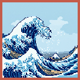

Acknowledgements
Nami Credits

Nami is a fork of
NetSurf for AmigaOS.
Without the NetSurf Browser Project and its contributors, this wave would never have risen.
NetSurf was brought to you by the following people:
Code
- John-Mark Bell
- Michael Drake
- Rob Kendrick
- François Revol
- Vincent Sanders
- Daniel Silverstone
- Chris Young
- Kevin Bagust
- Mark Benjamin
- Adam Blokus
- Paweł Blokus
- James Bursa
- Stefaan Claes
- Calin Dobos
- Sean Fox
- Stephen Fryatt
- Rik Griffin
- Matthew Hambley
- Rob Jackson
- Jeffrey Lee
- Adrian Lees
- Michael Lester
- Ole Loots
- Phil Mellor
- Philip Pemberton
- Darren Salt
- James Shaw
- Andrew Sidwell
- Andrew Timmins
- John Tytgat
- Sven Weidauer
- Chris Williams
- Richard Wilson
- Bo Yang
Documentation
- John-Mark Bell
- James Bursa
- Michael Drake
- Rob Kendrick
- James Shaw
- Richard Wilson
Graphics
- Michael Drake
- Andrew Duffell
- John Duffell
- Richard Hallas
- Phil Mellor
Translations
- Sebastian Barthel
- Bruno D'Arcangeli
- Samir Hawamdeh
- Gerard van Katwijk
- Jérôme Mathevet
- Simon Voortman
Nami
Nami branding, AmigaOS integration work, and the ukiyo-e–inspired theme are part of the AmigaZen / Nami fork. The mark borrows Hokusai’s Under the Wave off Kanagawa — Prussian blue spray on washi, with coral for the seal-stamp accent — rendered in chunky pixels for a Workbench-era eye.